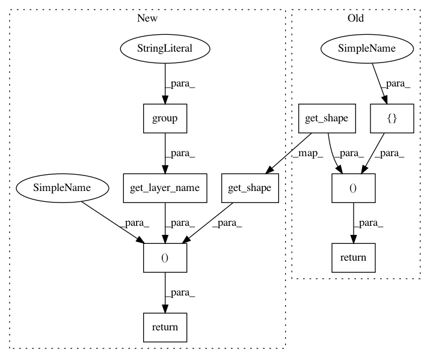

94fedbfc3f3bcb1aa3738f1997aa34834f8475cd,kraken/lib/vgsl.py,TorchVGSLModel,build_output,#TorchVGSLModel#,340
Before Change
self.criterion = CTCCriterion()
lin = LinSoftmax(input[1], int(m.group(4)))
return lin.get_shape(input), [lin]
After Change
self.criterion = CTCCriterion()
lin = LinSoftmax(input[1], int(m.group("out")))
return lin.get_shape(input), self.get_layer_name(m.group(0), m.group("name")), lin
In pattern: SUPERPATTERN
Frequency: 3
Non-data size: 9
Instances
Project Name: mittagessen/kraken
Commit Name: 94fedbfc3f3bcb1aa3738f1997aa34834f8475cd
Time: 2018-01-24
Author: mittagessen@l.unchti.me
File Name: kraken/lib/vgsl.py
Class Name: TorchVGSLModel
Method Name: build_output
Project Name: mittagessen/kraken
Commit Name: 94fedbfc3f3bcb1aa3738f1997aa34834f8475cd
Time: 2018-01-24
Author: mittagessen@l.unchti.me
File Name: kraken/lib/vgsl.py
Class Name: TorchVGSLModel
Method Name: build_conv
Project Name: mittagessen/kraken
Commit Name: 94fedbfc3f3bcb1aa3738f1997aa34834f8475cd
Time: 2018-01-24
Author: mittagessen@l.unchti.me
File Name: kraken/lib/vgsl.py
Class Name: TorchVGSLModel
Method Name: build_rnn